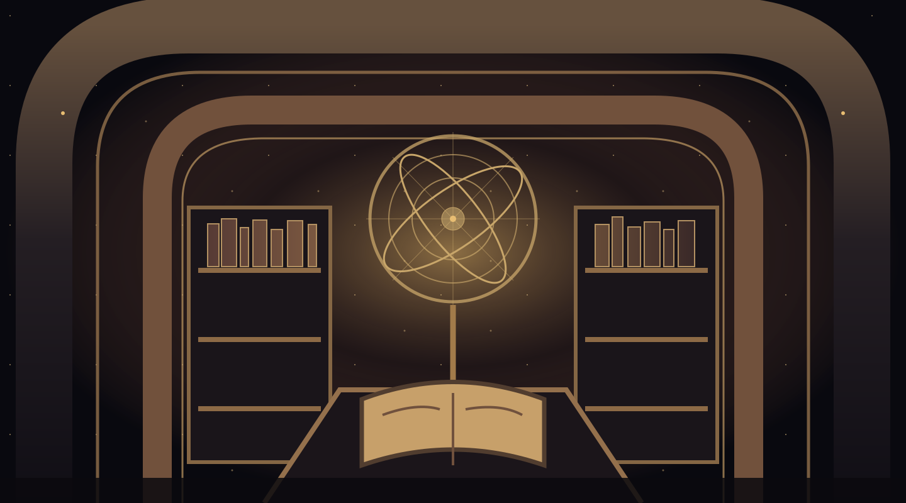

The World of Mysteries
The Archives of Orbis Arcanorum
An expanding collection of chambers. Countless mysteries. One world of knowledge. Discover source-led histories, ancient manuscripts, esoteric societies and extraordinary claims—each clearly classified by its evidence.
THE LIVING ARCHIVE
Choose your path through the unknown
Fourteen chambers of historical sources, disputed accounts and mysteries. Follow the evidence, explore the collections, or meet independent collectors and vendors.
Ⅰ · THE ARCHIVESEnter the fourteen chambersBrowse the searchable research catalogⅡ · THE HISTORICAL COLLECTIONUnseal the earlier recordsPreserved research and source leadsⅢ · THE COLLECTORS' VAULTDiscover extraordinary collectionsIndependent collectors and their storiesⅣ · THE MARKETPLACEMeet the keepers of curiositiesIndependent vendors, not house inventory
Explore the collection
Documented means historical evidence supports the existence of a person, text, event or tradition—not that a supernatural claim is proven. This is an early research prototype, not a complete or fully reviewed catalog.